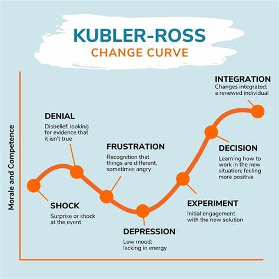
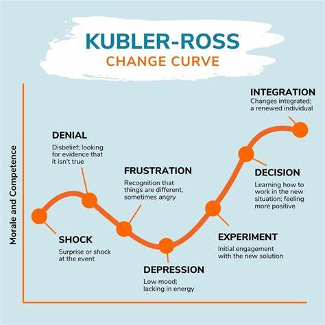
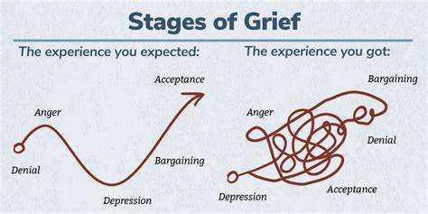
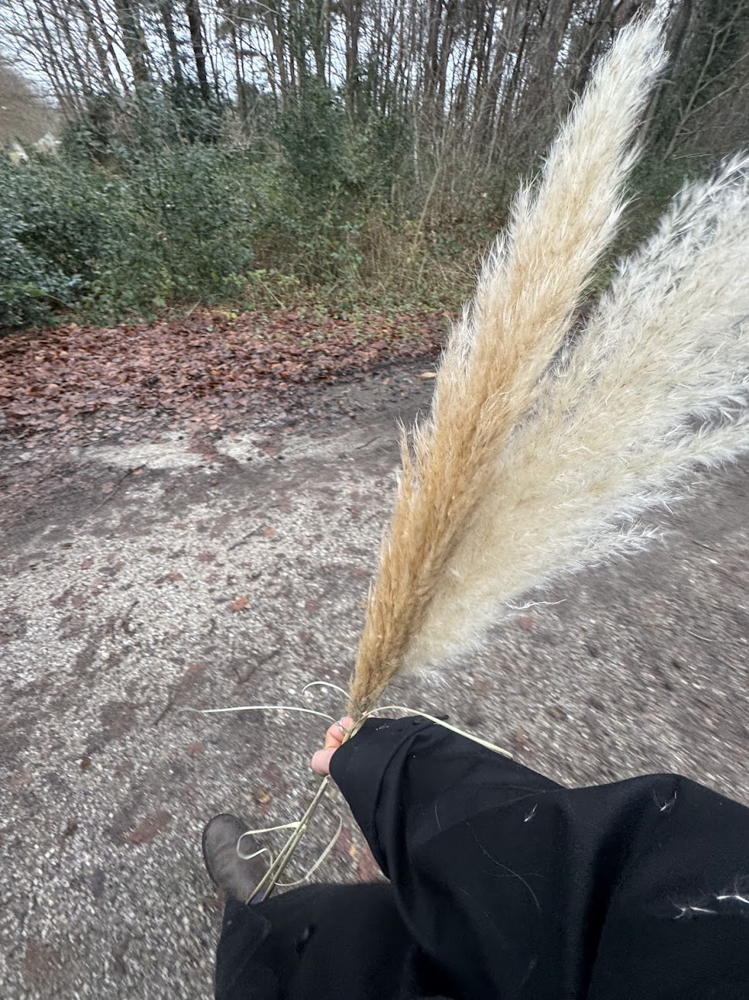

Titel¶
Essentie¶
 

De Kübler-Ross change curve, oftewel de Kübler-Ross stages of grief, is in essentie een traject, dat we doorlopen als we nieuws verwerken. Elizabeth Kübler-Ross was een Zwitsers-Amerikaanse Psycholoog, en schrijvven van het boek "On Death and Dying."
Zij was een soort Doula die mensen hielp met het loslaten van het leven in de laatste maanden van een ziekte. Uit meer dan 200 individuele patiënten over de jaren heen bouwde in 1969 zij een theorie op, die in dit model vereenvoudigd wordt weergegeven.
De reden waarom het ook de grief stages heet, is omdat het vaak duidelijkst is met slecht nieuws. Later is het ook uitgebreid naar "Change Curve".
Ook is er inmiddels wat meer vrijheid in de interpretatie. Zo is het niet altijd dat je exact alle fasen doorloopt, en sla je sommige soms over, zoals in mijn zelfreflectie hieronder.
Andere situaties doorloop je de fases soms juist keer op keer weer, en ziet het er eerder zo uit:

Maar toch is er vaak wel de een nodig om de volgende te bereiken. En het kan heel prettig zijn om te kijken en zien waar je bent. Zo was ik voor de begrafenis welliswaar ergens in acceptance voor mezelf, maar toch had ik redelijkerwijs
Relatie met Veranderkunde¶
De relatie met verandering lijkt me duidelijk. De meeste veranderingen heb je niet zelf in de hand, en moet je op de een of andere manier een plekje weten te geven. Dit model geeft je
Leidraad voor leiders in verandering¶
Om empathie en inlevingsvermogen te hebben voor een ander is het een handig gereedschap.
Faciliteren van groei¶
In tijden van verandering kan het echt ervaren worden als zeer overweldigend, en met dit model kan je iemand een richting geven, een lichtje aan het eind van de tunnel. Zelfs een stappenplan heeft wat. Ik kan me goed herinneren dat mijn moeder me ooit het advies gaf toen het uit ging met mijn vriendin, en toen zei ze, je moet het ergens een plekje geven, dit was "Acceptance", en vervolgens was de volgende stap ook "betekenis zoeken/geven".
Relatie met andere modellen¶
- Lewin's freeze unfreeze Hoewel Lewin's freeze unfreeze eerder een structuur is om door verandering heen te lopen, biedt Kubler-Ross hier eenzelfde stappenplan, maar dan voor de emotionele verwerking van een verandering. Ook kan Kübler-Ross change curve je een beetje inzicht geven waarom de "Freeze" fase zoveel "denial/anger" kan opleveren,
- En waarom de "Change" fase heel moeizaam kan verlopen (Anger/bargaining),
Zelfreflectie¶
Ik heb tijdens oud en nieuw een leuke nacht gehad met vrienden, echter die vriend waarbij ik was is helaas in diezelfde nacht zijn broer kwijt geraakt. Deze was al jaren depressief en besloot er eind aan te maken.
Vandaag heb ik het Kübler-Ross Change Curve gebruikt om te begrijpen wat er gebeurde, niet alleen in mijn eigen proces, maar ook in hoe ik de situatie van mijn vriend meemaakte.
Wat me opviel, is dat ik de eerste fases zoals ontkenning en boosheid grotendeels heb overgeslagen in het telefoongesprek zelf. Dat kwam waarschijnlijk omdat het niet direct mijn rouw is, maar meer een gedeeld verdriet. Ik kon de eerste fases overslaan. Ik sta er anders in, meer ondersteunend, en voelde meteen de verantwoordelijkheid om sterk te blijven en er voor mijn vriend te zijn.

Het model heeft me wel geholpen om te herkennen hoe mijn emoties ontwikkelde tijdens de gesprekken. Aan de telefoon voelde ik geen ongeloof of boosheid, omdat ik me al voorbereid voelde op het nieuws. Wat ik wél heb ervaren, was een diepe droefheid en een gevoel van machteloosheid, vooral omdat ik mijn vriend zag worstelen. Het hielp me inzien dat het oké is om mee te rouwen, maar dat mijn rol hierin anders is.
De fase van acceptatie kwam voor mij sneller, omdat ik de situatie al rationeel had geaccepteerd. Toch merkte ik dat ik mezelf soms voorbijliep door zo gefocust te zijn op mijn vriend en het praktisch ondersteunen. Het model herinnerde me eraan dat zelfs in gedeelde rouw, het belangrijk is om ook mijn eigen emoties ruimte te geven. Dit inzicht helpt me nu om niet alleen steun te bieden, maar ook bewuster om te gaan met wat ik voel en hoe ik daarmee omga."